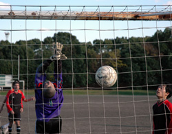
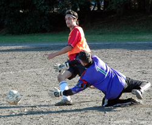
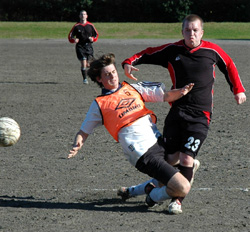

|
OIFuto, Sun 10th Dec. While the TML has a real shortage of grass pitches, seeing the Oifuto ground on the Sunday must have bought back memories for some of us more familiar with mud wrestling.
With plenty of waterlogged areas of the pitch clearly visible for all to see, it was clear that both team were in for a potentially treacherous encounter. For those who relish the good old fashion English style slide tackles, it was going to be a fun day.
As soon as the whistle was blown, everything manifested itself as predicted. Both teams struggled in vain to maintain either footing or ball control. For Maritizio it was too maintain their recent unbeaten run of form without slipping up (In a real manner of speaking!). For AFC it was to put some much needed points on the board to lift themselves from the lower end of the table.

It was midway during the first half when Maritizio's Henry rose above everybody else from a corner to head Maritizio's first goal.
Soon to follow was probably one of the best goals ever to grace the TML league. It was Maritizio's Henry again, this time with a supreme overhead kick from a low cross, which surged into the top corner of the net. Maritizio made several substitutions, while AFC stood fast with the same line up
The second half started with both teams again, showing signs of school boy soccer in dealing with conditions. AFC then clearly stepped up their gear by making several threatening long ball passes through the Maritizio defense, but didn't quite manager to judge the pace needed for the ball to hold up nicely for the chasing forwards. As the game progressed, Maritizio began to press harder and for this were rewarded with another 3 goals in the second half. And so it ended 5:0 to Maritizio who at present seem to be going through somewhat of a transformation in form
Maritizio's recent revival in form could be attributed not only to it's new managerial directive to play attractive & attacking football , but also due to the somewhat alarming decision of the team's sponsor ( Intercol ) to offer 5000 yen for each goal scored + 1000 for each goalkeeper save. !!!!. Hence, 'attractive & attacking' style soccer prompted much interest among all.
Report by Vernon Gill
|